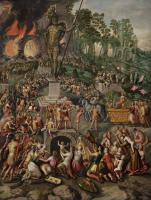
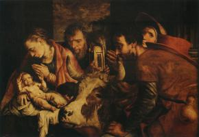
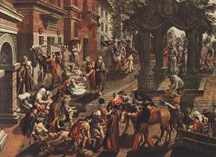

| Повернення з паломництва до святого Антонія
1550
|
|  | Поклоніння статуї Навуходоносора
1552-60
|
 | Христос несе хрест
1552
|
 | Христос у домі Марти і Марії
1553
|
|  | Поклоніння пастухів
1554
|
 | Христос і перелюбниця
1557-58
|
 | Христос і перелюбниця
1559
|
 | Поклоніння волхвів
1560
|
 | Чотири євангеліста
1560-65
|
 | Зцілення розслабленого, Басейн Віфезди
1575
|
 | Чин християнської любові
1575
|
|  | Апостоли Петро та Іван зцілюють хворих
1575
|